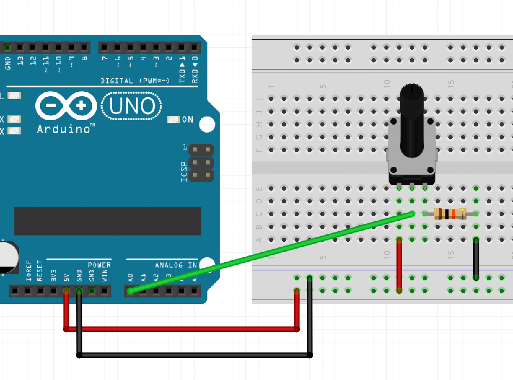
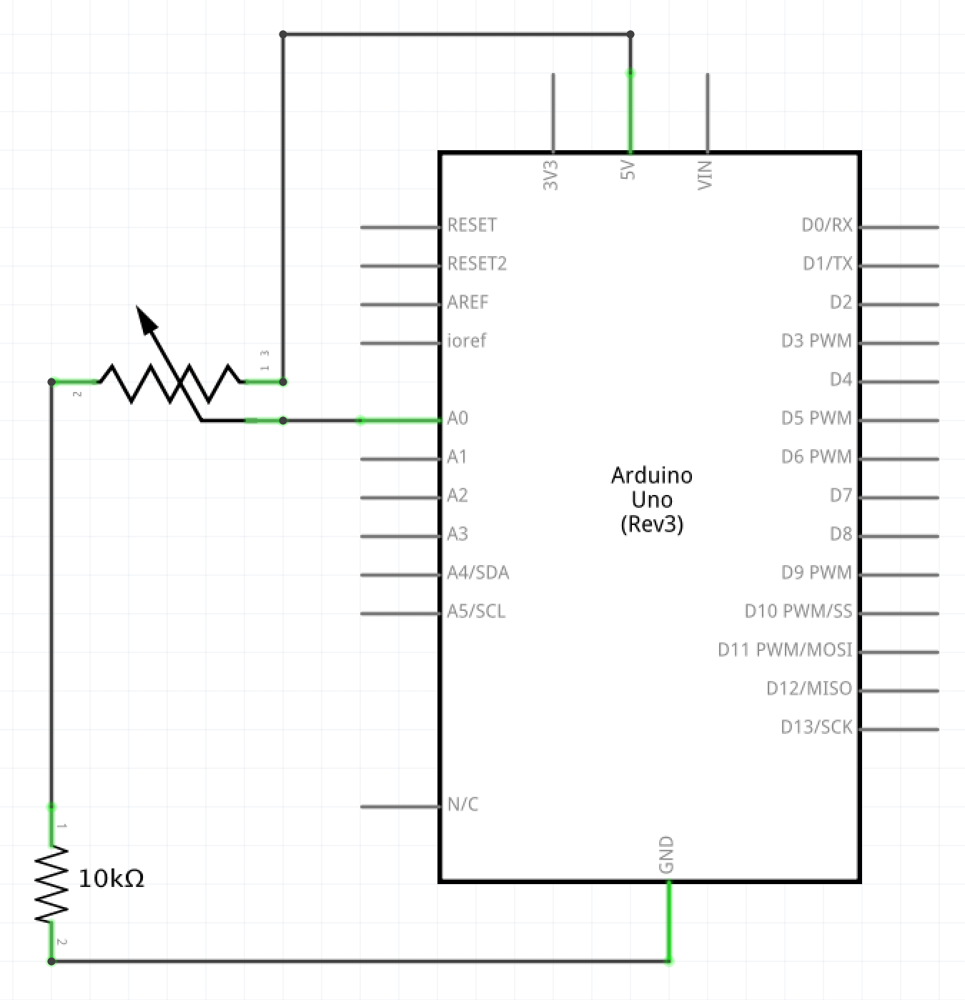

Timothy's Assignment 6!

Hardware
- Arduino Uno
- Potentiometer
- 10K resistor
- Hook-up wires
- Breadboard
Circuit
Schematic
Code for Arduino
void setup() {
// put your setup code here, to run once:
Serial.begin(9600); //initialize serial communications at 9600
}
void loop() {
// put your main code here, to run repeatedly:
int pot = analogRead(A0); // Set pot to value read from pin A0
int mappedPot = map(pot, 0, 1023, 0, 255); // map values from A0 to between 0 and 255
Serial.println(mappedPot); // print the values of mappedPot to serial
}
Sketch.js
var serial; // variable to hold an instance of the serialport library
var portName = '/dev/cu.usbmodem14601' //rename to the name of your port
var circleSize = 10; // set circle size to 10
function setup() {
serial = new p5.SerialPort(); // make a new instance of the serialport library
serial.on('list', printList); // set a callback function for the serialport list event
serial.on('connected', serverConnected); // callback for connecting to the server
serial.on('open', portOpen); // callback for the port opening
serial.on('data', serialEvent); // callback for when new data arrives
serial.on('error', serialError); // callback for errors
serial.on('close', portClose); // callback for the port closing
serial.list(); // list the serial ports
serial.open(portName); // open a serial port
createCanvas(1440, 900); // create background of 1440 by 900
}
// get the list of ports:
function printList(portList) {
// portList is an array of serial port names
for (var i = 0; i < portList.length; i++) {
// Display the list the console:
print(i + " " + portList[i]);
}
}
function serverConnected() { // new function to respond to callback of serverConnected
print('connected to server.'); // notification
}
function portOpen() { // new function to respond to callback of portOpen
print('the serial port opened.'); // notification
}
function serialError(err) { // new function to respond to callback of serialError
print('Something went wrong with the serial port. ' + err); // notification
}
function portClose() { // new function to respond to callback of portClose
print('The serial port closed.'); // notification
}
function serialEvent() { // new function to respond to callback of serialEvent when new data arrives
var data = serial.read(); // use function serial.read and store that in variable called data
console.log(data); // log data to console
circleSize = data; // set size of circle to data
}
function draw() { // function draw to draw a circle
background("#004488"); // blue background
fill("#44AAFF"); // light blue fill
noStroke(); // no border
ellipse(width/2, height/2, circleSize*3, circleSize*3); //draw circle with specified width, height, and circle size which is based on potentiometer
}